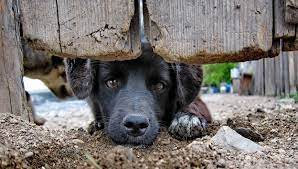

Os Animais
Não devem sofrer pelo
egoísmo humano
UIPA,
A ONG mais antiga do Brasil

"Os animais não
"Os animais não
existem em
função do
homem. Eles possuem
uma existência e um
valor próprio. Uma
moral que
não
incorpore essa
verdade é vazia. Um
sistema jurídico que a
exclua é cego"
-Tom Regan